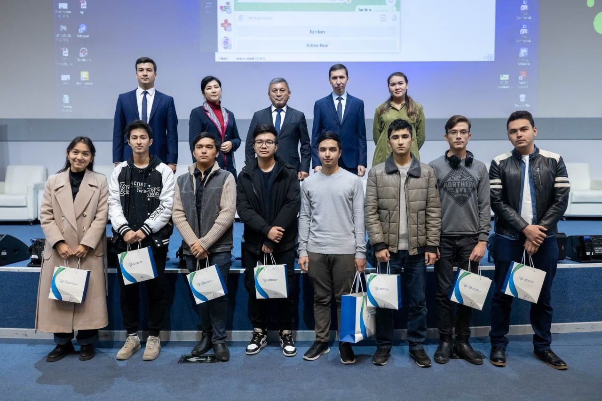
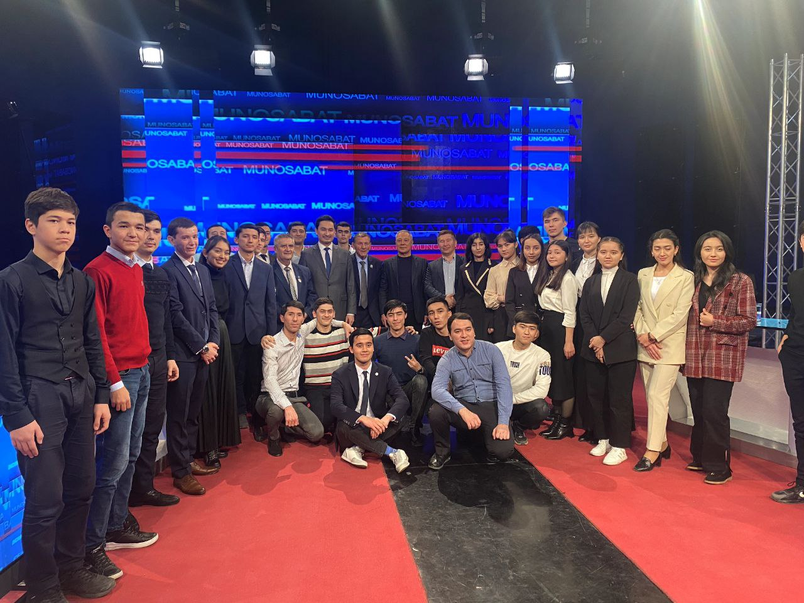
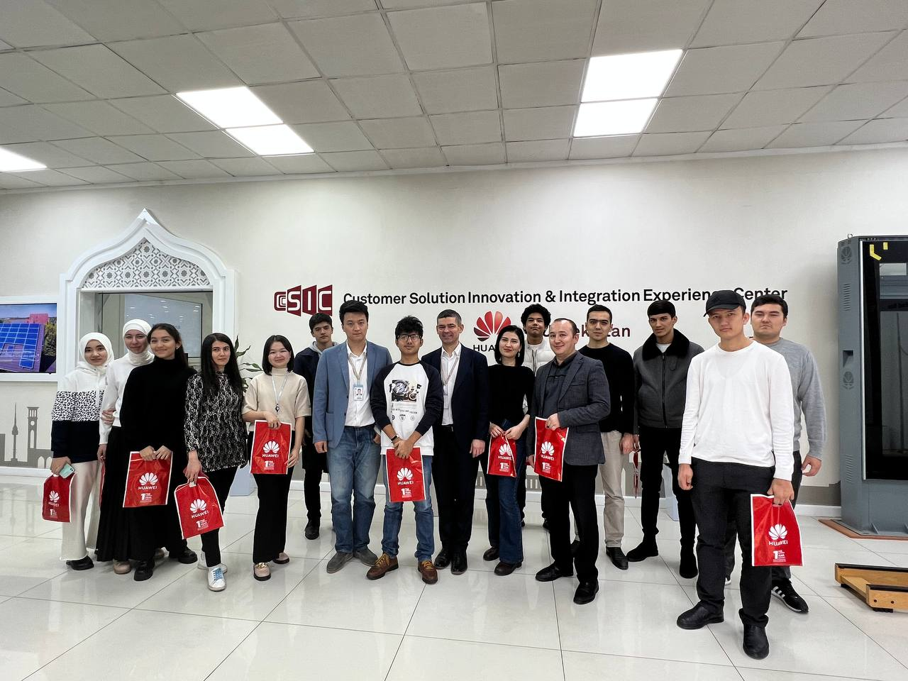
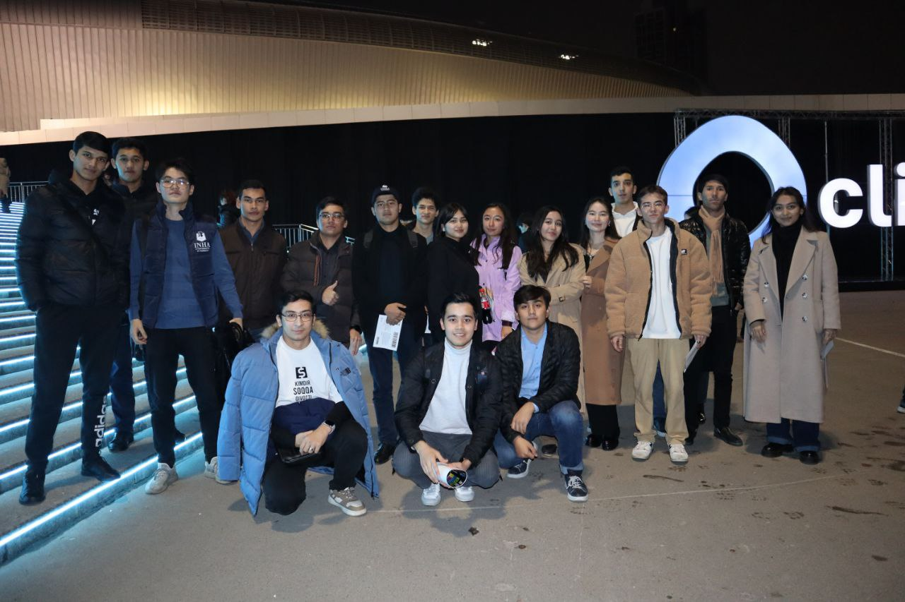
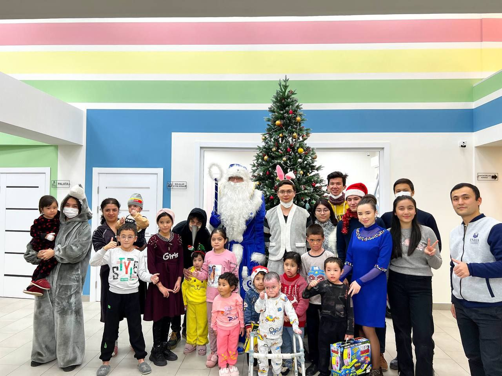
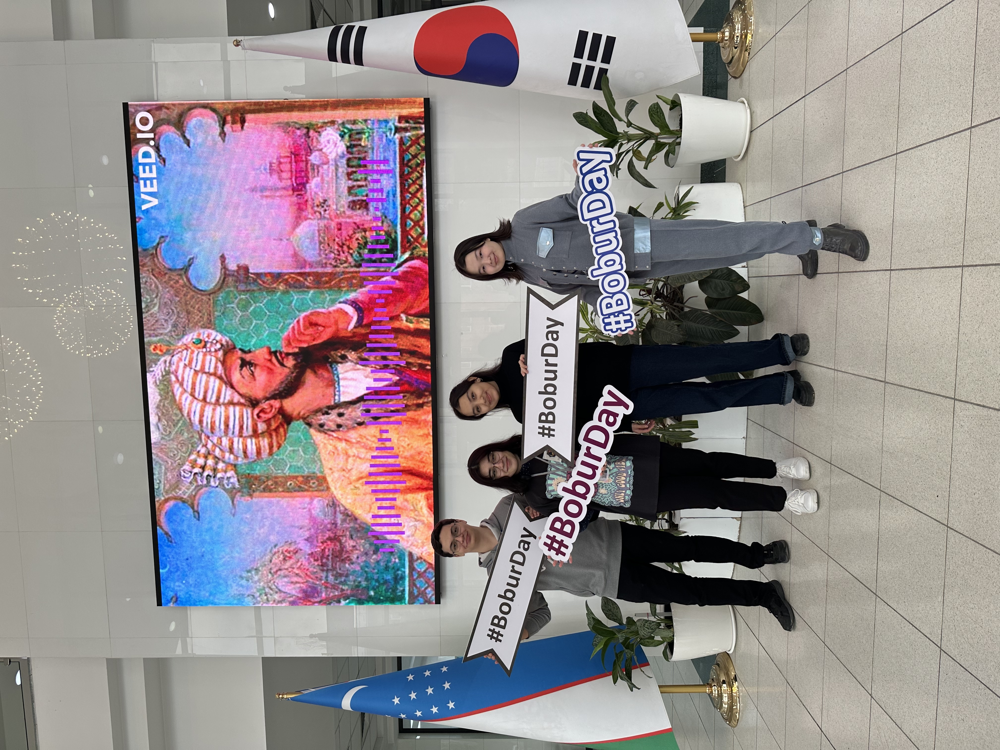
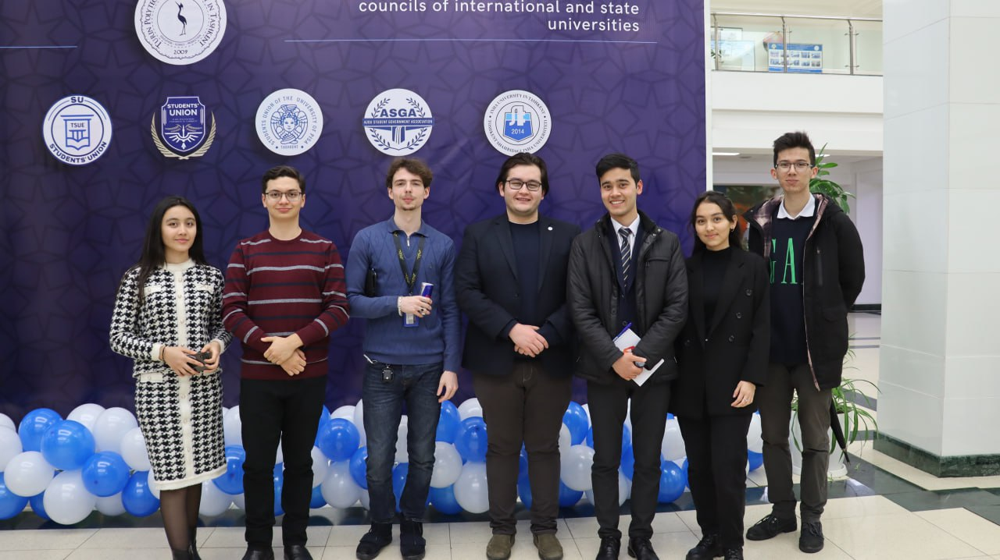
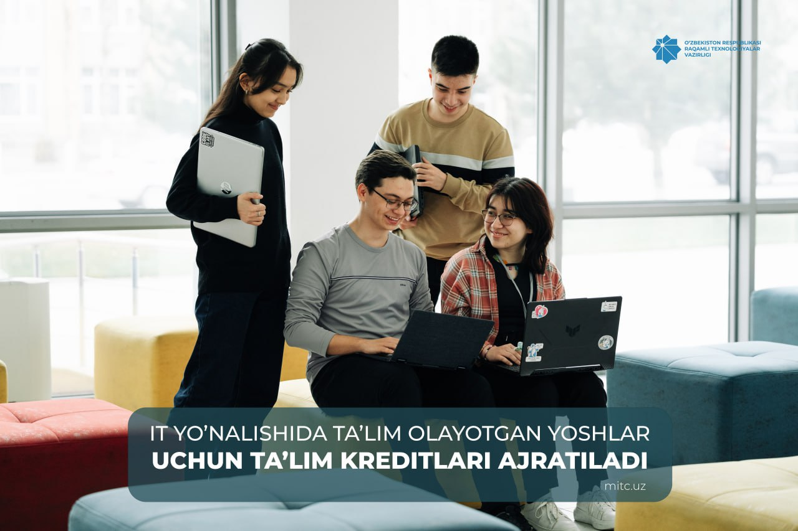

On November 17, a meeting of the Electronic Government Project Management Center with students was held in IUT on the occasion of "International Student Day".
During the program, students were introduced to the procedure of registration in the Unified Identification System OneID, services introduced at My.gov.uz. Also, the interdepartmental integration platform and database of the Electronic Government were analyzed on the example of one service. At the end of the meeting, a question-and-answer session was held with the students, and gifts were distributed to them.


On November 23, 2022, professors, students and the rector of Inha University in Tashkent Muzaffar Djalalov took part in the TV program "Munosabat" of the Uzbekistan TV channel. During the program, representatives of IUT spoke about the University, about the conditions of study and the results of the activities of the university since its foundation.

On November 29, 2022, students and staff of Inha University in Tashkent visited the Huawei office in Uzbekistan.
Representatives of Huawei Tech. Investment Tashkent spoke about the activities of the company, as well as introduced them to innovative solutions and products. At the end, Huawei presented gifts to the students.

On November 30, 2022, students of INHA university in Tashkent visited concert in Humo Arena.

On December 28, 2022, students and staff of Inha University in Tashkent visited the Kapalak Mercy House. The students held a fabulous performance for children, presented New Year gifts, and also lit candles on a sweet cake.
May every child be healthy and surrounded by care!

On February 14, on the occasion of the celebration of the 540th anniversary of the birth of Zahiriddin Muhammad Babur, quiz, a photo contest on the hashtags "Boburday", and a video contest were held among the students of Inha University in Tashkent.
During the day, at the entrance, students were given special stickers dedicated to the memory of the poet.
Prizes were awarded to the winners of the competitions.

On February 16, with the presence of the presidents of student councils of eight universities, the memorandum of cooperation has been signed to be partners and to support each other in the organization of tournaments and events ⛹️♂️👩💻🎉
Our team was really glad to visit the campus of Turin Polytechnic University and meet the teams of student councils. We express our gratitude to all the teams for their time and attention 😊

IT yo‘nalishida ta’lim olayotgan yoshlar uchun ta’lim kreditlari ajratiladi
“Respublikada nodavlat ta’lim tashkilotlarining o‘quv kurslarida yoshlarning axborot texnologiyalari sohasida tahsil olishi uchun ta’lim krediti ajratishni tartibga solish chora-tabdirlari to‘g‘risida”gi O‘zbekiston Respublikasi Vazirlar mahkamasining qarori qabul qilindi.
Unga ko‘ra, nodavlat ta’lim tashkilotlarining o‘quv kurslarida yoshlarning axborot texnologiyalari sohasida tahsil olishi uchun ta’lim kreditini ajratish tizimi yo‘lga qo‘yilishi belgilandi.

On February 27, the Rector of Inha University in Tashkent Muzaffar Djalalov, and Vice-Rector for Youth Policy of Inha University in Tashkent Turdimurat Tursunmuratov awarded the 100 most active students of the university for the last semester.